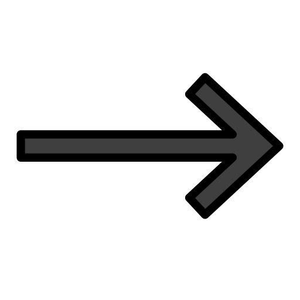
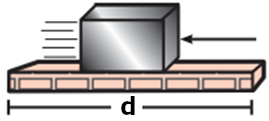

|
UNA CONVIVENCIA ARMÓNICA TRAE CONSIGO COSAS BUENAS, Y ES ALGO QUE TODOS PODEMOS TENER | |
| TRABAJO MECÁNICO | ||
| 쯈ué es el trabajo mecánico? | ||
| Es la capacidad que tiene una fuerza para producir un movimiento de traslación, si dicha fuerza no produce traslación entonces no se estará realizando trabajo mecánico. | ||
| 쮺칩mo se calcula el trabajo mecánico? |
||
El trabajo mecánico (W) se mide en el sistema internacional en joule y se representa por una J. |
||
EXISTEN ALGUNOS CASOS PARTICULARES: |
||
| Cuando la fuerza en dirección al movimiento (θ = 0°). |  | |
| La fuerza contraria al movimiento (θ = 180°) |  |
|
| Fuerza perpendicular al movimiento (θ = 90°) | ||
| OBSERVACIÓN | ||
| Toda fuerza se puede descomponer en una fuerza a favor o en contra del movimiento y en otra fuerza perpendicular al movimiento | ||
| Fórmula | ||
| Ejercicio resuelto: | ||
| Calcula el trabajo mecánico realizado por la fuerza de módulo F = 30N en la trayectoria entre A y B | ||
| Prueba tus conocimiento en el tema expuesto con el siguiente juego: | ||
|
Autores: Angel Pastaz, Melany Guaytarilla, Juan Mejía, Damaris Tulcanaza 2020 - 2021 2do Bachillerato Técnico Informático Unidad Educativa Municipal Técnica y en Ciencias "San Francisco de Quito" |
|